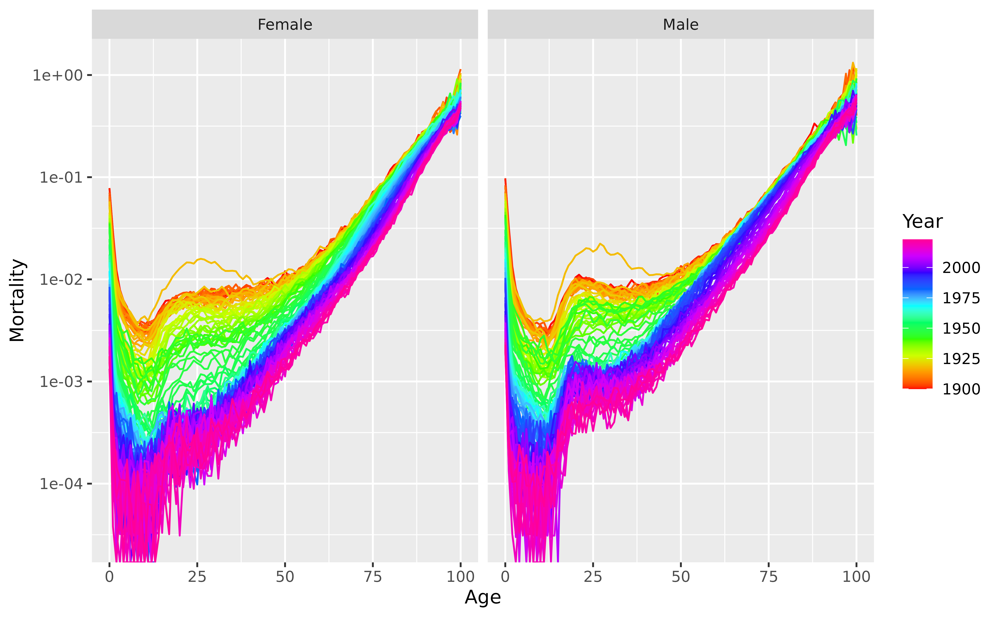
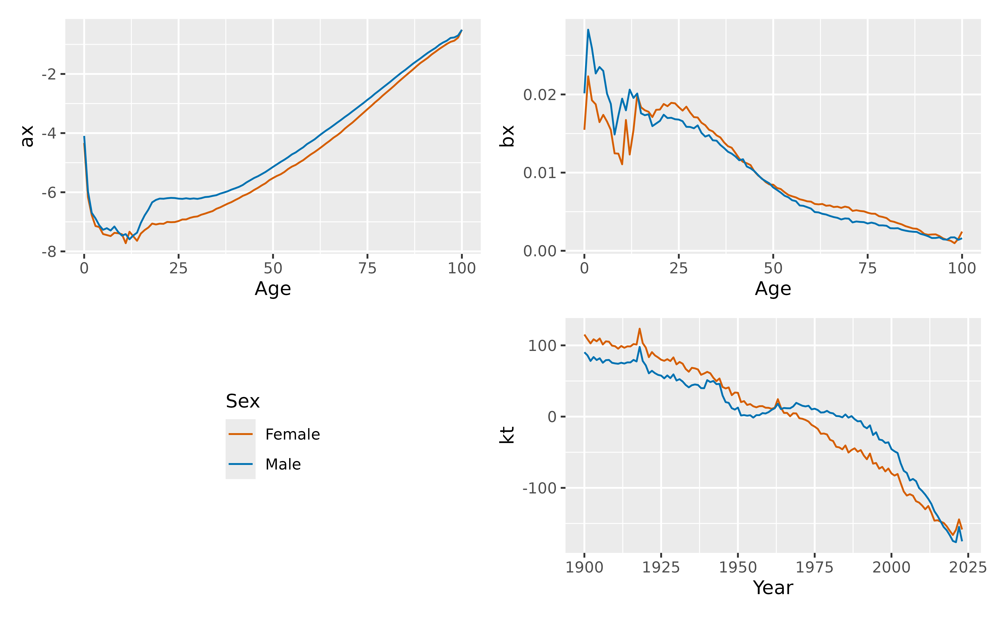
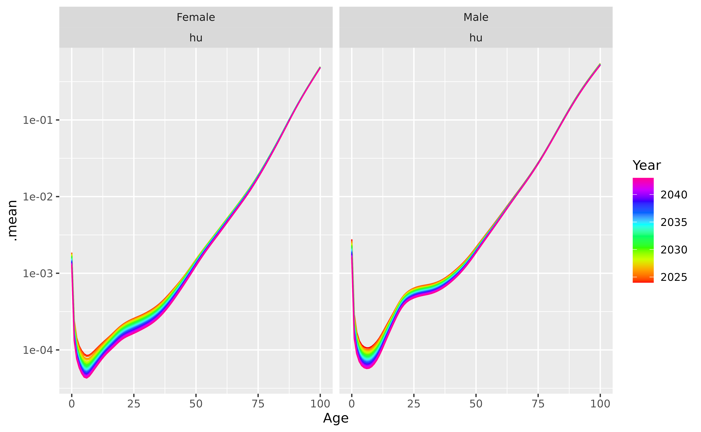

The goal of vital is to allow analysis of demographic data using tidy tools. It works with other tidyverse packages such as dplyr and ggplot2. It also works with the tidyverts packages, tsibble and fable.
vital objects
The basic data object is a vital, which is time-indexed
tibble that contains vital statistics such as births, deaths, population
counts, and mortality and fertility rates.
We will use Norwegian data in the following examples. First, let’s remove the “Total” Sex category and collapse the upper ages into a final age group of 100+.
nor <- norway_mortality |>
filter(Sex != "Total") |>
collapse_ages(max_age = 100)
nor
#> # A vital: 24,846 x 6 [1Y]
#> # Key: Age x Sex [101 x 2]
#> Year Age OpenInterval Sex Population Mortality
#> <int> <int> <lgl> <chr> <dbl> <dbl>
#> 1 1900 0 FALSE Female 30070 0.0778
#> 2 1900 1 FALSE Female 28960 0.0290
#> 3 1900 2 FALSE Female 28043 0.0123
#> 4 1900 3 FALSE Female 27019 0.00786
#> 5 1900 4 FALSE Female 26854 0.00624
#> 6 1900 5 FALSE Female 25569 0.00538
#> 7 1900 6 FALSE Female 25534 0.00422
#> 8 1900 7 FALSE Female 24314 0.00376
#> 9 1900 8 FALSE Female 24979 0.00380
#> 10 1900 9 FALSE Female 24428 0.00365
#> # ℹ 24,836 more rowsThis example contains data from 1900 to 2022. There are 101 age groups and 2 Sex categories. A vital must have a time “index” variable, and optionally other categorical variables known as “key” variables. Each row must have a unique combination of the index and key variables. Some columns are “vital” variables, such as “Age” and “Sex”.
We can use functions to see which variables are index, key or vital:
index_var(nor)
#> [1] "Year"
key_vars(nor)
#> [1] "Age" "Sex"
vital_vars(nor)
#> age sex population
#> "Age" "Sex" "Population"Plots
There are autoplot() functions for plotting
vital objects. These produce rainbow plots (Hyndman and Shang 2010) where each line
represents data for one year, and the variable is plotted against
age.
nor |>
autoplot(Mortality) +
scale_y_log10()
We can use standard ggplot functions to modify the plot as desired. For example, here are population pyramids for all years.
nor |>
mutate(Population = if_else(Sex == "Female", -Population, Population)) |>
autoplot(Population) +
coord_flip() +
facet_grid( . ~ Sex, scales = "free_x")
Life tables and life expectancy
Life tables (Chiang 1984) can be
produced using the life_table() function. It will produce
life tables for each unique combination of the index and key variables
other than age.
# Life tables for males and females in Norway in 2000
nor |>
filter(Year == 2000) |>
life_table()
#> # A vital: 202 x 13 [?]
#> # Key: Age x Sex [101 x 2]
#> Year Age Sex mx qx lx dx Lx Tx ex rx nx
#> <int> <int> <chr> <dbl> <dbl> <dbl> <dbl> <dbl> <dbl> <dbl> <dbl> <dbl>
#> 1 2000 0 Fema… 3.28e-3 3.27e-3 1 3.27e-3 0.997 81.4 81.4 0.997 1
#> 2 2000 1 Fema… 2.77e-4 2.77e-4 0.997 2.76e-4 0.997 80.4 80.6 1.00 1
#> 3 2000 2 Fema… 3.09e-4 3.09e-4 0.996 3.08e-4 0.996 79.4 79.7 1.00 1
#> 4 2000 3 Fema… 1.33e-4 1.33e-4 0.996 1.32e-4 0.996 78.4 78.7 1.00 1
#> 5 2000 4 Fema… 1.68e-4 1.68e-4 0.996 1.67e-4 0.996 77.4 77.7 1.00 1
#> 6 2000 5 Fema… 3.30e-5 3.30e-5 0.996 3.29e-5 0.996 76.4 76.7 1.00 1
#> 7 2000 6 Fema… 1.35e-4 1.35e-4 0.996 1.34e-4 0.996 75.4 75.7 1.00 1
#> 8 2000 7 Fema… 1.68e-4 1.68e-4 0.996 1.67e-4 0.996 74.4 74.7 1.00 1
#> 9 2000 8 Fema… 6.70e-5 6.70e-5 0.996 6.67e-5 0.995 73.4 73.7 1.00 1
#> 10 2000 9 Fema… 1.97e-4 1.97e-4 0.995 1.96e-4 0.995 72.4 72.7 1.00 1
#> # ℹ 192 more rows
#> # ℹ 1 more variable: ax <dbl>Life expectancy (\(e_x\) with \(x=0\) by default) is computed using
life_expectancy():
# Life expectancy for males and females in Norway
nor |>
life_expectancy() |>
ggplot(aes(x = Year, y = ex, color = Sex)) +
geom_line()
Smoothing
Several smoothing functions are provided:
smooth_spline(), smooth_mortality(),
smooth_fertility(), and smooth_loess(), each
smoothing across the age variable for each year. The methods used in
smooth_mortality() and smooth_fertility() are
described in Hyndman and Ullah (2007).
# Smoothed data
nor |>
filter(Year == 1967) |>
smooth_mortality(Mortality) |>
autoplot(Mortality) +
geom_line(aes(y = .smooth), col = "#0072B2") +
ylab("Mortality rate") +
scale_y_log10()
Lee-Carter models
Lee-Carter models (Lee and Carter 1992)
are estimated using the LC() function which must be called
within a model() function:
# Lee-Carter model
lc <- nor |>
model(lee_carter = LC(log(Mortality)))
lc
#> # A mable: 2 x 2
#> # Key: Sex [2]
#> Sex lee_carter
#> <chr> <model>
#> 1 Female <LC>
#> 2 Male <LC>Models are fitted for all combinations of key variables excluding
age. To see the details for a specific model, use the
report() function.
lc |>
filter(Sex == "Female") |>
report()
#> Series: Mortality
#> Model: LC
#> Transformation: log(Mortality)
#>
#> Options:
#> Adjust method: dt
#> Jump choice: fit
#>
#> Age functions
#> # A tibble: 101 × 3
#> Age ax bx
#> <int> <dbl> <dbl>
#> 1 0 -4.32 0.0154
#> 2 1 -6.15 0.0224
#> 3 2 -6.76 0.0192
#> 4 3 -7.13 0.0187
#> 5 4 -7.16 0.0164
#> # ℹ 96 more rows
#>
#> Time coefficients
#> # A tsibble: 123 x 2 [1Y]
#> Year kt
#> <int> <dbl>
#> 1 1900 115.
#> 2 1901 110.
#> 3 1902 107.
#> 4 1903 113.
#> 5 1904 111.
#> # ℹ 118 more rows
#>
#> Time series model: RW w/ drift
#>
#> Variance explained: 66.95%The results can be plotted.
autoplot(lc)
The components can be extracted.
age_components(lc)
#> # A tibble: 202 × 4
#> Sex Age ax bx
#> <chr> <int> <dbl> <dbl>
#> 1 Female 0 -4.32 0.0154
#> 2 Female 1 -6.15 0.0224
#> 3 Female 2 -6.76 0.0192
#> 4 Female 3 -7.13 0.0187
#> 5 Female 4 -7.16 0.0164
#> 6 Female 5 -7.40 0.0174
#> 7 Female 6 -7.43 0.0165
#> 8 Female 7 -7.46 0.0153
#> 9 Female 8 -7.36 0.0124
#> 10 Female 9 -7.37 0.0123
#> # ℹ 192 more rows
time_components(lc)
#> # A tsibble: 246 x 3 [1Y]
#> # Key: Sex [2]
#> Sex Year kt
#> <chr> <int> <dbl>
#> 1 Female 1900 115.
#> 2 Female 1901 110.
#> 3 Female 1902 107.
#> 4 Female 1903 113.
#> 5 Female 1904 111.
#> 6 Female 1905 114.
#> 7 Female 1906 110.
#> 8 Female 1907 111.
#> 9 Female 1908 109.
#> 10 Female 1909 103.
#> # ℹ 236 more rowsForecasts are obtained using the forecast() function
# Forecasts from Lee-Carter model
lc |>
forecast(h = 20)
#> # A vital fable: 4,040 x 6 [1Y]
#> # Key: Age x (Sex, .model) [101 x 2]
#> Sex .model Year Age Mortality .mean
#> <chr> <chr> <dbl> <int> <dist> <dbl>
#> 1 Female lee_carter 2023 0 t(N(-5.2, 0.033)) 0.00560
#> 2 Female lee_carter 2024 0 t(N(-5.2, 0.066)) 0.00557
#> 3 Female lee_carter 2025 0 t(N(-5.2, 0.099)) 0.00554
#> 4 Female lee_carter 2026 0 t(N(-5.3, 0.13)) 0.00551
#> 5 Female lee_carter 2027 0 t(N(-5.3, 0.17)) 0.00548
#> 6 Female lee_carter 2028 0 t(N(-5.3, 0.2)) 0.00545
#> 7 Female lee_carter 2029 0 t(N(-5.3, 0.24)) 0.00542
#> 8 Female lee_carter 2030 0 t(N(-5.4, 0.27)) 0.00539
#> 9 Female lee_carter 2031 0 t(N(-5.4, 0.31)) 0.00536
#> 10 Female lee_carter 2032 0 t(N(-5.4, 0.35)) 0.00533
#> # ℹ 4,030 more rowsThe forecasts are returned as a distribution column (here transformed
normal because of the log transformation used in the model). The
.mean column gives the point forecasts equal to the mean of
the distribution column.
Functional data models
Functional data models (Hyndman and Ullah
2007) can be estimated in a similar way to Lee-Carter models, but
with an additional smoothing step, then modelling with LC
replaced by FDM.
# FDM model
fdm <- nor |>
smooth_mortality(Mortality) |>
model(hu = FDM(log(.smooth)))
fc_fdm <- fdm |>
forecast(h = 20)
autoplot(fc_fdm) +
scale_y_log10()
Functional data models have multiple principal components, rather than the single factor used in Lee-Carter models.
fdm |>
autoplot(show_order = 3)
By default, six factors are estimated using FDM(). Here
we have chosen to plot only the first three.
The components can be extracted.
age_components(fdm)
#> # A tibble: 202 × 9
#> Sex Age mean phi1 phi2 phi3 phi4 phi5 phi6
#> <chr> <dbl> <dbl> <dbl> <dbl> <dbl> <dbl> <dbl> <dbl>
#> 1 Female 0 -4.32 0.132 0.256 0.0944 -0.0742 -0.0636 0.0492
#> 2 Female 1 -6.11 0.185 0.239 0.0104 -0.214 -0.123 0.397
#> 3 Female 2 -6.80 0.168 0.197 -0.0780 -0.232 0.00728 0.0667
#> 4 Female 3 -7.14 0.160 0.192 -0.146 -0.255 0.0774 -0.0286
#> 5 Female 4 -7.34 0.156 0.180 -0.198 -0.280 0.0803 -0.112
#> 6 Female 5 -7.48 0.153 0.150 -0.225 -0.262 0.0865 -0.225
#> 7 Female 6 -7.59 0.151 0.112 -0.240 -0.177 0.0723 -0.249
#> 8 Female 7 -7.68 0.148 0.0733 -0.253 -0.0577 0.0203 -0.158
#> 9 Female 8 -7.74 0.146 0.0372 -0.265 0.0471 -0.0547 -0.0237
#> 10 Female 9 -7.77 0.144 0.00134 -0.269 0.123 -0.131 0.0837
#> # ℹ 192 more rows
time_components(fdm)
#> # A tsibble: 246 x 9 [1Y]
#> # Key: Sex [2]
#> Sex Year mean beta1 beta2 beta3 beta4 beta5 beta6
#> <chr> <int> <dbl> <dbl> <dbl> <dbl> <dbl> <dbl> <dbl>
#> 1 Female 1900 1 13.6 0.0330 -0.563 0.0921 -0.0698 -0.317
#> 2 Female 1901 1 12.9 -0.171 -0.785 0.0404 -0.116 -0.248
#> 3 Female 1902 1 12.6 -0.474 -0.536 -0.0642 -0.151 -0.503
#> 4 Female 1903 1 13.4 -0.403 -0.739 -0.0355 -0.0865 -0.108
#> 5 Female 1904 1 13.1 -0.468 -0.547 0.171 -0.220 -0.389
#> 6 Female 1905 1 13.5 -0.374 -0.635 -0.0485 -0.0103 -0.120
#> 7 Female 1906 1 12.9 -0.866 -0.820 0.0496 -0.124 -0.223
#> 8 Female 1907 1 13.1 -0.490 -0.344 0.260 -0.103 -0.213
#> 9 Female 1908 1 12.9 -0.407 -0.636 0.0854 -0.171 -0.201
#> 10 Female 1909 1 12.2 -0.329 -0.753 0.0104 -0.130 -0.381
#> # ℹ 236 more rowsCoherent functional data models
A coherent functional data model (Hyndman, Booth, and Yasmeen 2013), is obtained by first computing the sex-products and sex-ratios of the smoothed mortality data. Then a functional data model is fitted to the smoothed data, forecasts are obtained, and the product/ratio transformation is reversed. The following code shows the steps.
fdm_coherent <- nor |>
smooth_mortality(Mortality) |>
make_pr(.smooth) |>
model(hby = FDM(log(.smooth), coherent = TRUE))
fc_coherent <- fdm_coherent |>
forecast(h = 20) |>
undo_pr(.smooth)
fc_coherent
#> # A vital fable: 4,040 x 6 [1Y]
#> # Key: Age x (Sex, .model) [101 x 2]
#> Year Age Sex .model .smooth .mean
#> <dbl> <dbl> <chr> <chr> <dist> <dbl>
#> 1 2023 0 Female hby sample[2000] 0.00180
#> 2 2023 1 Female hby sample[2000] 0.000219
#> 3 2023 2 Female hby sample[2000] 0.000138
#> 4 2023 3 Female hby sample[2000] 0.000110
#> 5 2023 4 Female hby sample[2000] 0.0000958
#> 6 2023 5 Female hby sample[2000] 0.0000892
#> 7 2023 6 Female hby sample[2000] 0.0000866
#> 8 2023 7 Female hby sample[2000] 0.0000859
#> 9 2023 8 Female hby sample[2000] 0.0000886
#> 10 2023 9 Female hby sample[2000] 0.0000930
#> # ℹ 4,030 more rowsHere, make_pr() makes the product-ratios, while
undo_pr() undoes them.
The argument coherent = TRUE in FDM()
ensures that the ARIMA models fitted to the coefficients are stationary
when applied to the sex-ratios.